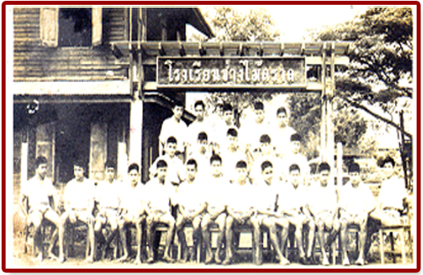

<div class="col-md-8 mb-3">
    <div class="card shadow p-3">
        <div class="card-body">
            <h3 class="main-heading">เกี่ยวกับวิทยาลัยเทคนิคตราด</h3>
            <div class="underline"></div>
            <div class="row pt-2">
                <div class="col-md-5">
                    
                </div>
                <div class="col-md-7">
                    <p>
                        เริ่มก่อตั้งเมื่อ ปี 2480 ใช้ชื่อ “โรงเรียนช่างไม้”
                        ในเนื้อที่ของกรมการศาสนา
                        วัดบุรินทร์(วัดร้าง) ประมาณ 6 ไร่เศษ โดยมี นายจิรภัทร สถาการ เป็น ครูใหญ่
                        ในสมัยนั้น
                        ปีพุทธศักราช 2510 โดยการใช้พื้นที่ของโรงเรียนการช่างสตรี ซึ่งถูกยุบรวมกับ
                        โรงเรียนช่างไม้
                        ในเนื้อที่ 15 ไร่ 1 งาน 72 ตารางวา อันเป็นที่ ตั้งของวิทยาลัยเทคนิคในปัจจุบัน
                    </p>

                    <ul type="square">
                        <li>ปี พ.ศ. 2480 โรงเรียนช่างไม้ตราด</li>
                        <li>ปี พ.ศ. 2500 โรงเรียนการช่างตราด</li>
                        <li>ปี พ.ศ. 2510 รวมกับ โรงเรียนการช่างสตรีใช้ชื่อ โรงเรียนการช่างตราด</li>
                        <li>ปี พ.ศ. 2522 โรงเรียนเทคนิคตราด</li>
                        <li>ปี พ.ศ. 2525 ถึง ปัจจุบัน วิทยาลัยเทคนิคตราด</li>
                    </ul>
                </div>
            </div>
        </div>
    </div>
</div>